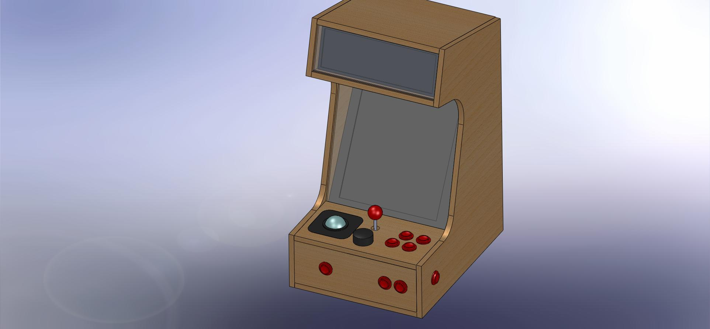
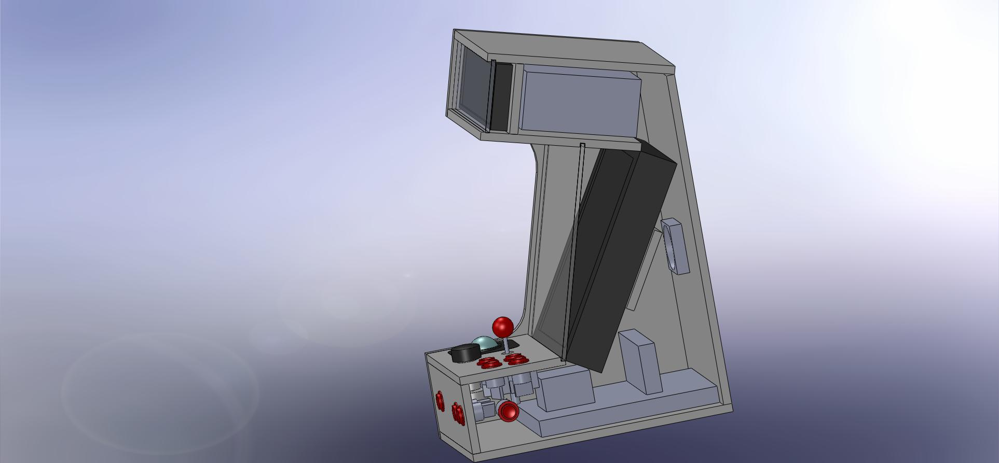

The Bartop Arcade Machine
Started 12/31/2012
Over the Christmas and New Year's holiday while surfing the web I found
someone who had
tried to make a marquee on a full sized MAME cabinet using a standard
wide screen LCD and then letting half of it stick out the top,
not the greatest but it got me wondering. I then
found someone that had purchased a super
expensive ultrawide screen
monitor used for store displays to make a MAME cabinet. I decided to see if I could
find
something cheaper which would work as a marquee display. I
found some car backup camera visor displays which would work
great
as marquee monitors on a small MAME cabinet. I decided it was time to
try an build a new tabletop MAME arcade machine.
The largest monitor I found was 10.2 inches (XO
Vision RM122 10.2" TFT LCD Rear View Monitor) and would match
well with a 15" LCD monitor mounted vertically.

I created a SolidWorks design which automatically scaled all the
cabinet parts to fit any sized monitor I put in it since I did not know
what the size of the monitor was going to be, small 15" 4:3
monitors are getting harder to find now.

I tried to make room for all the parts that would go inside but even
still this would be a pretty packed cabinet and untimately the
motherboard and video card didn't fit in the box as I originally
designed. I also opted not to have the protective clear sheet of glass
in front of the monitors. It would have made it too hard to reach the
monitor controls and it didn't seem to be nessesary for the overall
effect.


The first thing to arrive was the marquee monitor. I did some initial
bench tests before I ordered the rest of the parts just to make sure it
would work. My friend had an old computer which he had given to me to
do something with. The CPU fan was shot and it needed a video card, RAM
and a harddrive after I got everything working with the marquee monitor
I figured I was good to go.

Then the controls arrived so I figured it was time to build the box. I
thought about cutting it out on my CNC machine but I decided to just
cut the parts myself as all the fame pieces are rectangular except for
the sides and I could cut them out together. Here I have things
together for the first time with the monitors setting in the box.

Next I mounted up the main controls. The trackball
was the hardest to mount because the screw holes it comes with are more
suited for a thin metal top mounting but it did have some small plastic
lips on either side which I was able to use on the underside enough to
wedge it flush to the top of the controls. Unfortunatly this doesn't
hold it very well and I would need to add some support underneath
later.The trackball came with three button connectors (right, left,
middle buttons) so I was able to mount up the first two buttons to the
mouse. I could have purchased a trackball that is designed for surface
mounting but it was too expensive and the arcade ones are too
big for this cabinet. It was thinner rotated so I installed it rotated 90 degrees for extra clearance I then needed to use software to switch the mouse X & Y axis.

The minipac
allows you to use an IDE cable for the button wires. The wires are thin
and hard to work with so you might do better just buying the premade
harness instead but I was able to make it go. I didn't have any more
quick connectors the right size from my previous projects so I ordered
some sparkfun. They weren't the best quality but they worked well
enough. The spinner
and minipac
both connect with included USB cables. They are a little long but I
managed to fit the excess cable inside. I added to side buttons for
pinball playing. You can see the unsecure trackball bottom here, I
ended up mounting a board below the trackball from the top of the
control panel board using some 3" flat head machine screws to secure it
to the control panel.

My son beta tests the controls.


I dissassebled a pair of speakers and mounted them and the
electronics on the underside of the upper cabinet. I even used the
original cloth covers. The volume control and power switch for the
speakers are only availble when the cover is open because I couldn't
find a good way to mount it on the outside. I used the one open screw
hole on the bottom of the power supply to attach it to the upper part.
I also added some double stick tape to keep the power supply secure.
The harddrive is mounted to the side of the cabinet using two wood
screws. I used cut off wood screws and forced it into the screw hole
instead of bothering to find longer machine screws that would be flush
on the outside. I used motherboard mounting screws screwed directtly
into the wood bottom to secure the motherboard.
Unfortunatly the motherboard with the video card was too tall to fit
under the monitor in this direction and the CPU fan would run into the
joystick in the other orientation. So my final solution was to mount
the bottom panel on the ouside of the box instead of inset as
originally designed. I ended up rotating the original bottom panel and
cutting it to fit and using an extra spare board under the control
panel part of the box. This gave me an extra 1/2 inch to work with and
I notched out the control panel another 1/4 inch and that was enough to
fit the video card in place. I tried a 1/2 height video card with
s-video out but the signal streangth was not sufficient for the marquee
montior so I had to use the full size video card instead.

I rearranged the original
side artwork someone had created in illustrator to fit the
side of my cabinet and then printed it on some thicker photo paper on
my large format printer that I had salvaged from the trash a while
back. Probably not as good quality as a vinyl print from a custom printer
but good enough for me.

Finally I need to finish the back panel mounting for the fan, power
supply switch, cpu power switch, USB and ethernet connector.

Eveythings wired up, I hope it all fits.

OK, all buttoned up. I removed the chrome wire guard from the power
supply fan and put it on the outside instead because I didn't have one
this big in the parts pile. The USB connector is actually too close the
the edge and the first screw runs into the hard drive on the other side
so I used a different short screw instead so I could make it work.

The trackball
glows green and when you hit the mouse button it turns red. Another
reason to rotate the trackball is so the lights don't shine right in
your face.

Testing OK. Now I need to take it all apart to paint it, hopefully I
can get it all back together again.

I wanted to make the cabinet look like my xevious cabinet, it has black
in the middle.

...and white on the outside. I'm not sure if it would have been easier
to paint the white first and then the black but it turned out well.

I moved it inside to the basement to finish drying because the garage
was really cold.

OK, final reassembly, seems to have survived, and the dining room table can been seen again since New Years.

Now just needed to glue the side are to the side. I did some tests with
different glues because the paper was kindof plastic and I wasn't sure
how well some of the glues would stick. The best seemed to be the
Gorilla wood glue.


The finished project can now fit on my super desk downstairs next to me
so when I'm waiting for windows to finish updating my system I can play
some xevious.
MAME support
of marquees is not automatic
but can be done. I opted to compile my own version of MAME
which displays the marquee on the second monitor. Here is a patch file based on mame0148.
Here is a parts
list for people that are interested.
$20 2 sheets of 1/2" 2x4ft MDF board (Menards)
$7 can of black spraypaint (fleet farm)
$7 can of white spraypaint (fleet farm)
$5 small roller for glue (fleet farm)
$0 old motherboard (donated)
$0 CPU on motherboard (donated)
$0 replacement cpu fan (parts pile)
$2 CPU battery (microcenter)
$0 power supply (donated)
$0 2x2GB of ram (parts pile)
$0 s-video and RBG graphics card (parts pile)
$7 pair of speakers with amp (microcenter)
$7 small keyboard (microcenter)
$3 power switch (fleet farm)
$3 motherboard power pushbutton switch (fleet farm)
$0 ethernet backpanel plug (parts pile)
$0 case fan (donated)
$0 external case fan chrome grill cover, removed from power supply
$71 marquee monitor (XO Vision RM122 10.2" TFT LCD Rear View Monitor) (amazon.com)
$50 15" 4:3 HP LCD monitor (microcenter)
$5 s-video to component adapter (amazon.com)
$0 molex connector for marquee monitor 12V power (parts pile)
$20 9 round arcade buttons (ultimarc)
$0 PC back panel power plug (parts pile)
$0 2x PC power cables for power supply and monitor (parts pile)
$4 bag of wire crimp connectors (sparkfun.com)
$0 tie wraps (found on bench)
$0 4 electrical wire screw caps (found on bench)
$0 gorilla wood glue (found on bench)
$0 spool green wire (found on bench)
$0 IDE cable for connecting buttons to minipac (parts pile)
$10 USB wireless dongle (microcenter)
$0 RGB video cable (parts pile)
$60 1 TB hardrive (microcenter)
$15 PS2 trackball (sparkfun)
$3 3x long flat head machine screws for mounting trackball bottom support (home depot)
$3 bag of 1.25" wood screws (menards)
$0 various salvaged screws, bolts, nuts and washers (found on bench)
$0 USB motherboard external connector (parts pile)
$10 flywheel weight for spinner (ultimarc)
$70 spinner (ultimarc)
$30 minipac (ultimarc)
$35 Mag-Stick Plus (ultimarc)
$15 extra long balltop handle for joystick (ultimarc)
Total $462
back